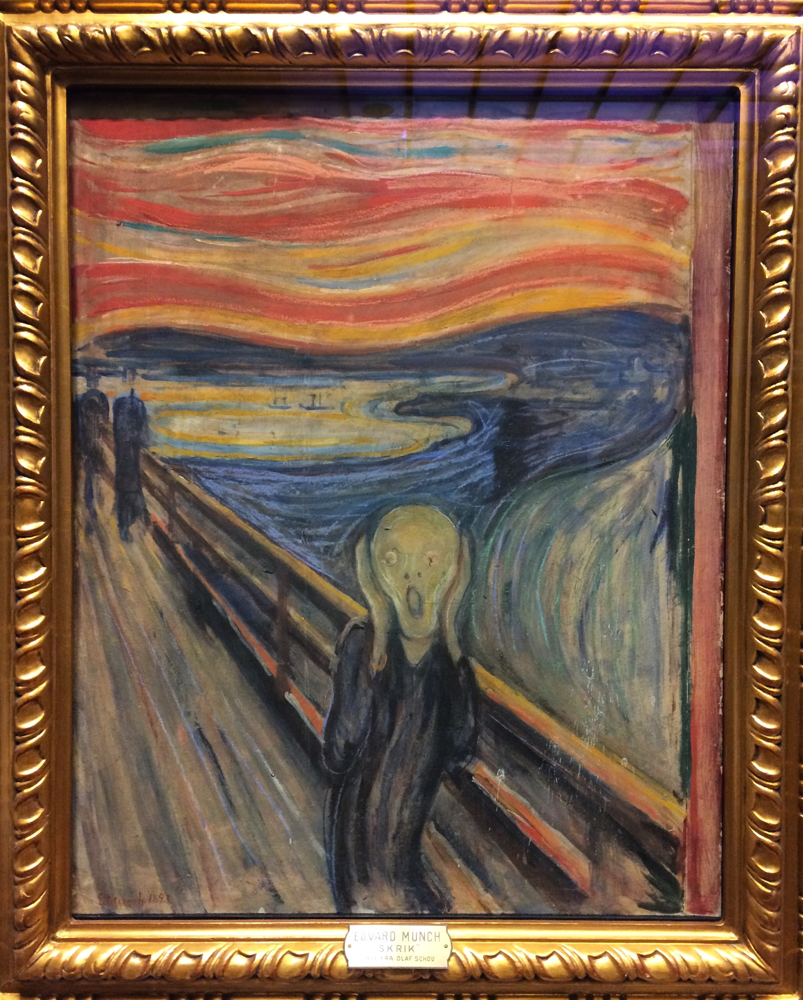
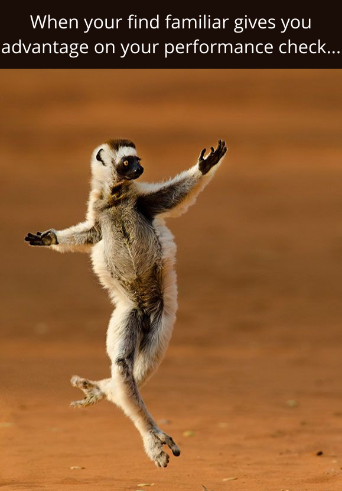

Use Quarto, Make Friends: a two-year journey
I wrote a blog back in early 2023 when I first switched from blogdown to Quarto on my initial impression (read here), and this is a two-year follow-up on my journey since I started using Quarto, for my personal website, teaching, scientific works and collaborative community projects.
Quarto as a teaching tool
From personal to workshop website
I switched from blogdown to Quarto in late 2022, right after my PhD. It was initially a cure for a severe burnout from a combination of work-related stressors, when I desperately needed something other than research. My mental state was like the famous painting by Norwegian artist Edvard Munch:

The experience of the switch was explained in the previously mentioned blog. Briefly, it was light like a feather. Since I was quite satisfied, I thought, why don’t I make a workshop website? So I did.
The result was quite good, I made the (as far as I knew) first quarto workshop website at University of Oslo for the Oslo Bioinformatics Workshop Week 2022. Feedback from students were positive, and the instructor team thought it hosts the material in a more organized way.
Single day workshop -> two week course
I was greatly encouraged by the experience, so when I got a 50% position at University of Oslo as biostatistics lecturer, I thought, why don’t we have the same thing for the course?

Oh well, the workload is crushing. There were a few key differences:
- R scripts and material were unavailable since the course was originally in STATA. Everything need to be done from scratch, for at least 12 lab sessions;
- The students generally have little IT skills, which means more effort need to be done to guide them through the ‘get started’ part.

It took one month to create the first version of the website. More details about the experience can be read here.
Adding WebR to the course
One year later, as technology advances, we added new content to some parts of the website. Most notably is the interactivity achieved through WebR. For example, I made this page on randomness and statistical distribution where students can interactively modify code chunks in a web browser.
Quarto as a collaboration tool
A static (or even interactive) website is not exactly what you call ‘collaborative tool’. However, if you work as a group towards something cool, Quarto might just be the tool you need. Check out the CAMIS project to find out what I mean by this!
What else?
The associated talk is available on YouTube, check it out!